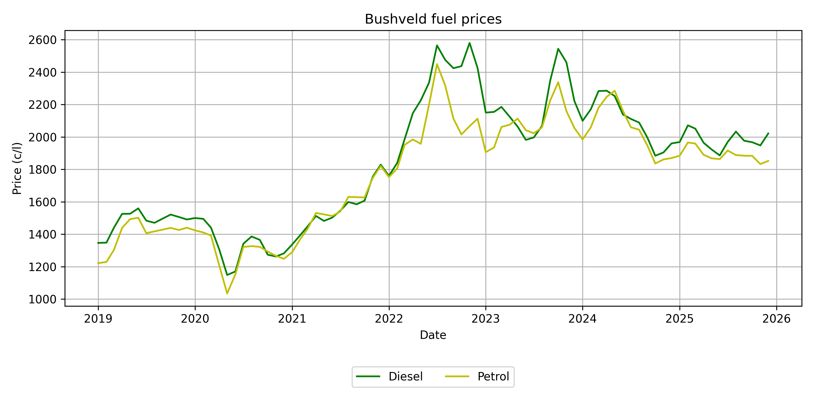

Historic data | Seasonal patterns | Correlation trends
HomeMonthly fuel price data were obtained from the Department of Mineral Resources and Energy (DMRE) fuel price archive under the Fuel Regulations for South Africa. The dataset contains official regulated fuel prices, which are updated on the first Wednesday of every month. The fuel price adjustments reflect changes in international oil prices, exchange rate movements, and domestic fuel-related costs, making them an important economic indicator for industries that rely heavily on energy inputs.
The fuel prices differ across geographical zones in South Africa due to variations in transportation and distribution costs from coastal fuel importation points and refineries. Therefore, the regulated fuel prices are published according to different pricing zones, with each zone representing specific areas of the country. These regional differences allow fuel costs to be analysed according to the location-specific economic conditions experienced by businesses and consumers.
Fuel prices play a significant role within the agricultural sector, as energy is a fundamental input across all agricultural activities. From primary production to processing and distribution, every agricultural subsector is affected by fuel price fluctuations. In crop production, fuel is required for machinery operations such as planting, spraying, harvesting, and transporting produce. In livestock production, fuel influences the cost of feed transportation, farm machinery, livestock handling, and movement of animals to markets. The forestry, horticulture, and agro-processing industries are similarly dependent on fuel for production activities, logistics, and supply chain operations.
Changes in fuel prices can therefore have a direct impact on agricultural input costs, production decisions, and ultimately the prices of agricultural commodities. Incorporating fuel price data into agricultural analyses provides insight into broader economic pressures affecting farmers and can assist in understanding the relationship between energy costs and agricultural market dynamics.
For this study, fuel price data were collected across the relevant South African pricing zones to represent regional fuel cost variations and provide a broader understanding of how energy costs may influence agricultural systems.
Historical fuel price movements provide insight into the changing energy costs faced by industries and consumers over time. The regulated fuel prices have experienced periods of significant volatility, driven by factors such as fluctuations in global crude oil prices, exchange rate movements, and changes in domestic fuel-related costs.
For the agricultural sector, these historical trends are particularly important, as fuel represents a key input across the entire agricultural value chain. Changes in fuel prices influence production costs, transportation expenses, and the profitability of farming operations. Understanding past fuel price behaviour therefore provides valuable context when analysing economic pressures experienced by agricultural producers.
The graph below illustrates the historical movement of fuel prices across the selected pricing zones, highlighting periods of increases, decreases, and variability in fuel costs over time.
